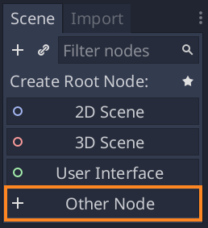

您的第一个游戏¶
概览¶
本教程将指导您完成第一个Godot项目。您将学习Godot编辑器的工作原理、如何构建项目、以及如何构建2D游戏。
注解
该项目是Godot引擎的一个介绍。它假定您已经有一定的编程经验。如果您完全不熟悉编程，则应从这里开始： 编写脚本。
这个游戏叫做 Dodge the Creeps!。您的角色必须尽可能长时间移动并避开敌人。这是最终结果的预览：

Why 2D? 3D games are much more complex than 2D ones. You should stick to 2D until you have a good understanding of the game development process and how to use Godot.
项目设置¶
Launch Godot and create a new project. Then, download
dodge_assets.zip. This contains the
images and sounds you’ll be using to make the game. Unzip these files in your
project folder.
注解
For this tutorial, we will assume you are familiar with the Godot editor. If you haven’t read 场景与节点, do so now for an explanation of setting up a project and using the editor.
This game is designed for portrait mode, so we need to adjust the size of the
game window. Click on Project -> Project Settings -> Display -> Window and
set “Width” to 480 and “Height” to 720.
Also in this section, under the “Stretch” options, set Mode to “2d” and
Aspect to “keep”. This ensures that the game scales consistently on
different sized screens.
组织项目¶
In this project, we will make 3 independent scenes: Player,
Mob, and HUD, which we will combine into the game’s Main
scene. In a larger project, it might be useful to create folders to hold
the various scenes and their scripts, but for this relatively small
game, you can save your scenes and scripts in the project’s root folder,
identified by res://. You can see your project folders in the FileSystem
Dock in the lower left corner:
Player 场景¶
第一个场景，我们会定义 Player 对象。创建单独的 Player 场景的好处之一是，即使在创建游戏的其他部分之前，我们仍可以对其进行单独测试。
节点结构¶
To begin, we need to choose a root node for the player object. As a general rule, a scene’s root node should reflect the object’s desired functionality - what the object is. Click the “Other Node” button and add an Area2D node to the scene.
Godot将在场景树中的节点旁边显示警告图标。你现在可以忽略它。我们稍后再谈。
With Area2D we can detect objects that overlap or run into the player.
Change the node’s name to Player by double-clicking on it. Now that we’ve
set the scene’s root node, we can add additional nodes to give it more
functionality.
在将任何子级添加到 Player 节点之前，我们要确保不会通过点击它们而意外地移动它们或调整其大小。选择节点，然后点击锁右侧的图标；它的工具提示显示 确保对象的子级不可选择。
Save the scene. Click Scene -> Save, or press Ctrl + S on Windows/Linux or Cmd + S on macOS.
注解
对于此项目，我们将遵循Godot的命名约定。
- GDScript：类（节点）使用Pascal命名法（PascalCase），变量和函数使用蛇形命名法（snake_case），常量使用全大写（ALL_CAPS）（请参阅 GDScript 风格指南）。
- C#：类、导出变量和方法使用PascalCase，私有字段使用_camelCase，局部变量和参数使用camelCase(参见 C# 风格指南)。连接信号时，请务必准确键入方法名称。
精灵动画¶
Click on the Player node and add an AnimatedSprite node as a
child. The AnimatedSprite will handle the appearance and animations
for our player. Notice that there is a warning symbol next to the node.
An AnimatedSprite requires a SpriteFrames resource, which is a
list of the animations it can display. To create one, find the
Frames property in the Inspector and click “[empty]” ->
“New SpriteFrames”. Click again to open the “SpriteFrames” panel:
On the left is a list of animations. Click the “default” one and rename
it to “walk”. Then click the “New Animation” button to create a second animation
named “up”. Find the player images in the “FileSystem” tab - they’re in the
art folder you unzipped earlier. Drag the two images for each animation, named
playerGrey_up[1/2] and playerGrey_walk[1/2], into the “Animation Frames”
side of the panel for the corresponding animation:
Player 图像对于游戏窗口来说有点太大，所以我们需要缩小它们。点击 AnimatedSprite 节点并将 Scale 属性设置为 (0.5,0.5) 。您可以在属性检查器面板中的 Node2D 标题下找到它。
最后，添加一个 CollisionShape2D 作为 Player 的子节点。它用于决定 Player 的“碰撞盒”，亦或者说是它碰撞区域的边界。对于该角色，CapsuleShape2D 节点最适合，因此，在属性检查器中的“形状”旁边，单击“ [空]””->“新建CapsuleShape2D”。使用两个尺寸手柄，调整形状，以覆盖住精灵：
完成后，您的 Player 场景看起来应该像这样：

Make sure to save the scene again after these changes.
移动 Player¶
Now we need to add some functionality that we can’t get from a built-in
node, so we’ll add a script. Click the Player node and click the
“Attach Script” button:
在脚本设置窗口中，您可以保留默认设置。只要点击 创建 就好：
注解
如果您要创建一个C#脚本或者其他语言的脚本，那就在创建之前在 语言 下拉菜单中选择语言。
注解
如果这是您第一次使用GDScript，请在继续之前阅读 编写脚本。
首先声明该对象将需要的成员变量：
extends Area2D
export var speed = 400 # How fast the player will move (pixels/sec).
var screen_size # Size of the game window.
public class Player : Area2D
{
[Export]
public int Speed = 400; // How fast the player will move (pixels/sec).
private Vector2 _screenSize; // Size of the game window.
}
在第一个变量 speed 上使用 export 关键字，这样允许在属性检查器中设置其值。对于希望能够像节点的内置属性一样进行调整的值，这可能很方便。点击 Player 节点，您将看到该属性现在显示在属性检查器的“脚本变量”部分中。请记住，如果您在此处更改值，它将覆盖脚本中已写入的值。
警告
如果使用的是C#，则每当要查看新的导出变量或信号时，都需要（重新）构建项目程序集。点击编辑器窗口底部的“ Mono”一词以显示Mono面板，然后单击“ 构建项目”按钮，即可手动触发此构建。

当节点进入场景树时，_ready() 函数被调用，这是查找游戏窗口大小的好时机：
func _ready():
screen_size = get_viewport_rect().size
public override void _Ready()
{
_screenSize = GetViewport().Size;
}
现在我们可以使用 _process() 函数定义 Player 将执行的操作。_process() 在每一帧都被调用，因此我们将使用它，来更新我们希望会经常变化的游戏元素。对于 Player ，我们需要执行以下操作：
- 检查输入。
- 沿给定方向移动。
- 播放适当的动画。
首先，我们需要检查输入—— Player 是否按下了键？对于这个游戏，我们有4个方向的输入要检查。输入动作在项目设置中的“输入映射”下定义。在这里，您可以定义自定义事件，并为其分配不同的键、鼠标事件、或其他输入。对于此演示项目，我们将使用分配给键盘上箭头键的默认事件。
You can detect whether a key is pressed using
Input.is_action_pressed(), which returns true if it’s pressed
or false if it isn’t.
func _process(delta):
var velocity = Vector2() # The player's movement vector.
if Input.is_action_pressed("ui_right"):
velocity.x += 1
if Input.is_action_pressed("ui_left"):
velocity.x -= 1
if Input.is_action_pressed("ui_down"):
velocity.y += 1
if Input.is_action_pressed("ui_up"):
velocity.y -= 1
if velocity.length() > 0:
velocity = velocity.normalized() * speed
$AnimatedSprite.play()
else:
$AnimatedSprite.stop()
public override void _Process(float delta)
{
var velocity = new Vector2(); // The player's movement vector.
if (Input.IsActionPressed("ui_right"))
{
velocity.x += 1;
}
if (Input.IsActionPressed("ui_left"))
{
velocity.x -= 1;
}
if (Input.IsActionPressed("ui_down"))
{
velocity.y += 1;
}
if (Input.IsActionPressed("ui_up"))
{
velocity.y -= 1;
}
var animatedSprite = GetNode<AnimatedSprite>("AnimatedSprite");
if (velocity.Length() > 0)
{
velocity = velocity.Normalized() * Speed;
animatedSprite.Play();
}
else
{
animatedSprite.Stop();
}
}
We start by setting the velocity to (0, 0) - by default, the player
should not be moving. Then we check each input and add/subtract from the
velocity to obtain a total direction. For example, if you hold right
and down at the same time, the resulting velocity vector will be
(1, 1). In this case, since we’re adding a horizontal and a vertical
movement, the player would move faster diagonally than if it just moved horizontally.
We can prevent that if we normalize the velocity, which means we set
its length to 1, then multiply by the desired speed. This means no
more fast diagonal movement.
小技巧
如果您以前从未使用过向量数学，或者需要复习，可以在Godot中的 向量数学 上查看向量用法的解释。最好了解一下，但对于本教程的其余部分而言，这不是必需的。
We also check whether the player is moving so we can call play() or stop()
on the AnimatedSprite.
$是get_node()的简写。因此在上面的代码中，$AnimatedSprite.play()与get_node("AnimatedSprite").play()相同。
小技巧
在GDScript中，$ 返回在当前节点的相对路径处的节点，如果找不到该节点，则返回 null。由于AnimatedSprite是当前节点的子项，因此我们可以使用 $AnimatedSprite。
Now that we have a movement direction, we can update the player’s position. We
can also use clamp() to prevent it from leaving the screen. Clamping a value
means restricting it to a given range. Add the following to the bottom of
the _process function (make sure it’s not indented under the else):
position += velocity * delta
position.x = clamp(position.x, 0, screen_size.x)
position.y = clamp(position.y, 0, screen_size.y)
Position += velocity * delta;
Position = new Vector2(
x: Mathf.Clamp(Position.x, 0, _screenSize.x),
y: Mathf.Clamp(Position.y, 0, _screenSize.y)
);
小技巧
_process() 函数的 delta 参数是*帧长度*——完成上一帧所花费的时间。使用这个值的话，可以保证你的移动不会被帧率的变化所影响。
点击“运行场景”（F6）并确认您能够在屏幕中沿任一方向移动玩家。
警告
If you get an error in the “Debugger” panel that says
Attempt to call function 'play' in base 'null instance' on a null instance
this likely means you spelled the name of the AnimatedSprite node wrong.
Node names are case-sensitive and $NodeName must match the name
you see in the scene tree.
选择动画¶
Now that the player can move, we need to change which animation the
AnimatedSprite is playing based on its direction. We have the “walk”
animation, which shows the player walking to the right. This animation should
be flipped horizontally using the flip_h property for left movement. We also
have the “up” animation, which should be flipped vertically with flip_v
for downward movement. Let’s place this code at the end of the _process()
function:
if velocity.x != 0:
$AnimatedSprite.animation = "walk"
$AnimatedSprite.flip_v = false
# See the note below about boolean assignment
$AnimatedSprite.flip_h = velocity.x < 0
elif velocity.y != 0:
$AnimatedSprite.animation = "up"
$AnimatedSprite.flip_v = velocity.y > 0
if (velocity.x != 0)
{
animatedSprite.Animation = "walk";
animatedSprite.FlipV = false;
// See the note below about boolean assignment
animatedSprite.FlipH = velocity.x < 0;
}
else if (velocity.y != 0)
{
animatedSprite.Animation = "up";
animatedSprite.FlipV = velocity.y > 0;
}
注解
The boolean assignments in the code above are a common shorthand for programmers. Since we’re doing a comparison test (boolean) and also assigning a boolean value, we can do both at the same time. Consider this code versus the one-line boolean assignment above:
if velocity.x < 0:
$AnimatedSprite.flip_h = true
else:
$AnimatedSprite.flip_h = false
if (velocity.x < 0)
{
animatedSprite.FlipH = true;
}
else
{
animatedSprite.FlipH = false;
}
Play the scene again and check that the animations are correct in each of the directions.
小技巧
A common mistake here is to type the names of the animations wrong. The
animation names in the SpriteFrames panel must match what you type in the
code. If you named the animation "Walk", you must also use a capital
“W” in the code.
When you’re sure the movement is working correctly, add this line to _ready(),
so the player will be hidden when the game starts:
hide()
Hide();
准备碰撞¶
我们希望 Player 能够检测到何时被敌人击中，但是我们还没有任何敌人！没关系，因为我们将使用Godot的 信号 功能来使其正常工作。
在脚本顶部，extends Area2d 之后，添加以下内容：
signal hit
// Don't forget to rebuild the project so the editor knows about the new signal.
[Signal]
public delegate void Hit();
这定义了一个称为 hit 的自定义信号，当 Player 与敌人碰撞时，我们将使其 Player 发射（发出）信号。我们将使用 Area2D 来检测碰撞。选择 Player 节点，然后点击属性检查器选项卡旁边的“节点”选项卡，以查看 Player 可以发出的信号列表：

Notice our custom “hit” signal is there as well! Since our enemies are
going to be RigidBody2D nodes, we want the
body_entered(body: Node) signal. This signal will be emitted when a
body contacts the player. Click “Connect..” and the “Connect a Signal” window
appears. We don’t need to change any of these settings so click “Connect” again.
Godot will automatically create a function in your player’s script.

Note the green icon indicating that a signal is connected to this function. Add this code to the function:
func _on_Player_body_entered(body):
hide() # Player disappears after being hit.
emit_signal("hit")
$CollisionShape2D.set_deferred("disabled", true)
public void OnPlayerBodyEntered(PhysicsBody2D body)
{
Hide(); // Player disappears after being hit.
EmitSignal("Hit");
GetNode<CollisionShape2D>("CollisionShape2D").SetDeferred("disabled", true);
}
每次敌人击中 Player 时，都会发出信号。我们需要禁用 Player 的碰撞，以便我们不会多次触发 hit 信号。
注解
Disabling the area’s collision shape can cause an error if it happens
in the middle of the engine’s collision processing. Using set_deferred()
tells Godot to wait to disable the shape until it’s safe to do so.
The last piece is to add a function we can call to reset the player when starting a new game.
func start(pos):
position = pos
show()
$CollisionShape2D.disabled = false
public void Start(Vector2 pos)
{
Position = pos;
Show();
GetNode<CollisionShape2D>("CollisionShape2D").Disabled = false;
}
Enemy 场景¶
Now it’s time to make the enemies our player will have to dodge. Their behavior will not be very complex: mobs will spawn randomly at the edges of the screen, choose a random direction, and move in a straight line.
We’ll create a Mob scene, which we can then instance to create any
number of independent mobs in the game.
注解
请参阅 实例化 以了解有关实例化的更多信息。
节点设置¶
Click Scene -> New Scene and add the following nodes:
别忘了设置子项，使其无法被选中，就像您对 Player 场景所做的那样。
在 RigidBody2D 属性中，将 Gravity Scale 设置为 0，这样怪物就不会下坠。此外，在 PhysicsBody2D 部分下，点击 Mask 属性并去除第一个复选框的勾选。这会确保怪物不会彼此碰撞。
Set up the AnimatedSprite like you did for the player.
This time, we have 3 animations: fly, swim, and walk. There are two
images for each animation in the art folder.
Adjust the “Speed (FPS)” to 3 for all animations.

Set the Playing property in the Inspector to “On”.
We’ll select one of these animations randomly so that the mobs will have some variety.
像 Player 图像一样，这些怪物的图像也要缩小。设置 AnimatedSprite 的 Scale 属性为 (0.75, 0.75)。
As in the Player scene, add a CapsuleShape2D for the
collision. To align the shape with the image, you’ll need to set the
Rotation Degrees property to 90 (under “Transform” in the Inspector).
Save the scene.
敌人的脚本¶
将脚本添加到 Mob 并添加以下成员变量：
extends RigidBody2D
export var min_speed = 150 # Minimum speed range.
export var max_speed = 250 # Maximum speed range.
public class Mob : RigidBody2D
{
// Don't forget to rebuild the project so the editor knows about the new export variables.
[Export]
public int MinSpeed = 150; // Minimum speed range.
[Export]
public int MaxSpeed = 250; // Maximum speed range.
}
When we spawn a mob, we’ll pick a random value between min_speed and
max_speed for how fast each mob will move (it would be boring if they
were all moving at the same speed).
现在让我们看一下脚本的其余部分。在 _ready() 中，我们从三个动画类型中随机选择一个：
func _ready():
var mob_types = $AnimatedSprite.frames.get_animation_names()
$AnimatedSprite.animation = mob_types[randi() % mob_types.size()]
// C# doesn't implement GDScript's random methods, so we use 'System.Random' as an alternative.
static private Random _random = new Random();
public override void _Ready()
{
GetNode<AnimatedSprite>("AnimatedSprite").Animation = _mobTypes[_random.Next(0, _mobTypes.Length)];
}
First, we get the list of animation names from the AnimatedSprite’s frames
property. This returns an Array containing all three animation names:
["walk", "swim", "fly"].
We then need to pick a random number between 0 and 2 to select one of these
names from the list (array indices start at 0). randi() % n selects a
random integer between 0 and n-1.
注解
You must use randomize() if you want your sequence of “random”
numbers to be different every time you run the scene. We’re going
to use randomize() in our Main scene, so we won’t need it here.
The last piece is to make the mobs delete themselves when they leave the
screen. Connect the screen_exited() signal of the VisibilityNotifier2D
node and add this code:
func _on_VisibilityNotifier2D_screen_exited():
queue_free()
public void OnVisibilityNotifier2DScreenExited()
{
QueueFree();
}
这样就完成了 Mob 场景。
Main 场景¶
现在是时候将它们整合在一起了。创建一个新场景并添加一个名为 Main 的节点 Node。点击“实例”按钮，然后选择保存的 Player.tscn。
现在，将以下节点添加为 Main 的子节点，并按如下所示对其进行命名（值以秒为单位）：
- Timer （名为
MobTimer）——控制怪物产生的频率 - Timer （名为
ScoreTimer）——每秒增加分数 - Timer （名为
StartTimer）——在开始之前给出延迟 - Position2D （名为
StartPosition）——指示Player的起始位置
如下设置每个 Timer 节点的 Wait Time 属性：
MobTimer：0.5ScoreTimer：1StartTimer：2
此外，将 StartTimer 的 One Shot 属性设置为 On，并将 StartPosition 节点的 Position 设置为 (240, 450)。
生成怪物¶
Main 节点将产生新的生物，我们希望它们出现在屏幕边缘的随机位置。添加一个名为 MobPath 的 Path2D 节点作为 Main 的子级。当您选择 Path2D 时，您将在编辑器顶部看到一些新按钮：
选择中间的那个（ 添加点 ），然后通过点击以在所示的角点处添加点来绘制路径。要使点吸附到网格，请确保选中 吸附到网格。该选项可以在 锁定 按钮左侧的 捕捉选项 按钮下找到，显示为一系列三个垂直点。

重要
以 顺时针 的顺序绘制路径，否则小怪会 向外 而非 向内 生成！
在图像上放置点 4 后，点击 闭合曲线 按钮，您的曲线将完成。
现在已经定义了路径，添加一个 PathFollow2D 节点作为 MobPath 的子节点，并将其命名为 MobSpawnLocation。该节点在移动时，将自动旋转并沿着该路径，因此我们可以使用它沿路径来选择随机位置和方向。
Your scene should look like this:

Main 脚本¶
将脚本添加到 Main。在脚本的顶部，我们使用 export (PackedScene) 来允许我们选择要实例化的 Mob 场景。
extends Node
export (PackedScene) var Mob
var score
func _ready():
randomize()
public class Main : Node
{
// Don't forget to rebuild the project so the editor knows about the new export variable.
[Export]
public PackedScene Mob;
private int _score;
// We use 'System.Random' as an alternative to GDScript's random methods.
private Random _random = new Random();
public override void _Ready()
{
}
// We'll use this later because C# doesn't support GDScript's randi().
private float RandRange(float min, float max)
{
return (float)_random.NextDouble() * (max - min) + min;
}
}
Click the Main node and you will see the Mob property in the Inspector
under “Script Variables”.
You can assign this property’s value in two ways:
- Drag
Mob.tscnfrom the “FileSystem” panel and drop it in theMobproperty . - Click the down arrow next to “[empty]” and choose “Load”. Select
Mob.tscn.
Next, click on the Player and connect the hit signal. We want to make a
new function named game_over, which will handle what needs to happen when a
game ends. Type “game_over” in the “Receiver Method” box at the bottom of the
“Connect a Signal” window and click “Connect”. Add the following code to the
new function, as well as a new_game function that will set everything up
for a new game:
func game_over():
$ScoreTimer.stop()
$MobTimer.stop()
func new_game():
score = 0
$Player.start($StartPosition.position)
$StartTimer.start()
public void GameOver()
{
GetNode<Timer>("MobTimer").Stop();
GetNode<Timer>("ScoreTimer").Stop();
}
public void NewGame()
{
_score = 0;
var player = GetNode<Player>("Player");
var startPosition = GetNode<Position2D>("StartPosition");
player.Start(startPosition.Position);
GetNode<Timer>("StartTimer").Start();
}
Now connect the timeout() signal of each of the Timer nodes (StartTimer,
ScoreTimer , and MobTimer) to the main script. StartTimer will start
the other two timers. ScoreTimer will increment the score by 1.
func _on_StartTimer_timeout():
$MobTimer.start()
$ScoreTimer.start()
func _on_ScoreTimer_timeout():
score += 1
public void OnStartTimerTimeout()
{
GetNode<Timer>("MobTimer").Start();
GetNode<Timer>("ScoreTimer").Start();
}
public void OnScoreTimerTimeout()
{
_score++;
}
在 _on_MobTimer_timeout() 中，我们将创建一个 mob 实例，沿着 Path2D 随机选择一个起始位置，然后让 mob 移动。PathFollow2D 节点将沿路径移动，因此会自动旋转，所以我们将使用它来选择怪物的方向及其位置。
注意，必须使用 add_child() 将新实例添加到场景中。
func _on_MobTimer_timeout():
# Choose a random location on Path2D.
$MobPath/MobSpawnLocation.offset = randi()
# Create a Mob instance and add it to the scene.
var mob = Mob.instance()
add_child(mob)
# Set the mob's direction perpendicular to the path direction.
var direction = $MobPath/MobSpawnLocation.rotation + PI / 2
# Set the mob's position to a random location.
mob.position = $MobPath/MobSpawnLocation.position
# Add some randomness to the direction.
direction += rand_range(-PI / 4, PI / 4)
mob.rotation = direction
# Set the velocity (speed & direction).
mob.linear_velocity = Vector2(rand_range(mob.min_speed, mob.max_speed), 0)
mob.linear_velocity = mob.linear_velocity.rotated(direction)
public void OnMobTimerTimeout()
{
// Choose a random location on Path2D.
var mobSpawnLocation = GetNode<PathFollow2D>("MobPath/MobSpawnLocation");
mobSpawnLocation.SetOffset(_random.Next());
// Create a Mob instance and add it to the scene.
var mobInstance = (RigidBody2D)Mob.Instance();
AddChild(mobInstance);
// Set the mob's direction perpendicular to the path direction.
float direction = mobSpawnLocation.Rotation + Mathf.Pi / 2;
// Set the mob's position to a random location.
mobInstance.Position = mobSpawnLocation.Position;
// Add some randomness to the direction.
direction += RandRange(-Mathf.Pi / 4, Mathf.Pi / 4);
mobInstance.Rotation = direction;
// Choose the velocity.
mobInstance.SetLinearVelocity(new Vector2(RandRange(150f, 250f), 0).Rotated(direction));
}
重要
Why PI? In functions requiring angles, GDScript uses radians,
not degrees. If you’re more comfortable working with
degrees, you’ll need to use the deg2rad() and
rad2deg() functions to convert between the two.
Testing the scene¶
Let’s test the scene to make sure everything is working. Add this to _ready():
func _ready():
randomize()
new_game()
public override void _Ready()
{
NewGame();
}
}
Let’s also assign Main as our “Main Scene” - the one that runs automatically
when the game launches. Press the “Play” button and select Main.tscn when
prompted.
You should be able to move the player around, see mobs spawning, and see the player disappear when hit by a mob.
When you’re sure everything is working, remove the call to new_game() from
_ready().
HUD¶
我们的游戏需要的最后一块是UI：一个界面，用于显示得分、“游戏结束”消息、和重新启动按钮。创建一个新场景，并添加一个名为 HUD 的 CanvasLayer 节点。HUD 表示 平视显示（heads-up display），这是一种信息显示，显示为游戏视图顶部的叠加层。
CanvasLayer 节点允许我们在游戏其余部分上面的层上绘制UI元素， 以便其显示的信息不会被任何游戏元素覆盖，比如 Player 或 mobs。
The HUD needs to display the following information:
- 得分，由
ScoreTimer更改。 - 一条消息，例如
Game Over或Get Ready！ - 一个
Start按钮来开始游戏。
UI元素的基本节点是 Control。要创造UI，我们会使用 Control 的两种节点： Label 和 Button 。
创建以下节点作为 HUD 的子节点：
Click on the ScoreLabel and type a number into the Text field in the
Inspector. The default font for Control nodes is small and doesn’t scale
well. There is a font file included in the game assets called
“Xolonium-Regular.ttf”. To use this font, do the following:
- 在
自定义字体的下拉选项中，选择新建DynamicFont

- 点击您添加的
DynamicFont，然后在Font/Font Data的下拉选项中选择Load并选择Xolonium-Regular.ttf文件。您还必须设置字体的Size。设置为64就可以了。

Once you’ve done this on the ScoreLabel, you can click the down arrow next
to the DynamicFont property and choose “Copy”, then “Paste” it in the same place
on the other two Control nodes.
注解
锚点和边距： Control 节点不仅有位置和大小，也有锚点和边距。锚点定义了原点——节点边缘的参考点。当您移动或调整 Control 节点大小时，边距会自动更新。它们表示从 Control 节点的边缘到其锚点的距离。详情请参阅 使用 Control 节点设计界面 。
按如下图所示排列节点。点击“布局”按钮以设置 一个Control 节点的布局：

您可以拖动节点以手动放置它们，或者要进行更精确的放置，请使用以下设置：
ScoreLabel¶
- 布局： “顶部宽度”
- Text :
0 - 对齐： “居中”
Message¶
- 布局： “水平中心宽”
- 文本：
Dodge the Creeps! - 对齐： “居中”
- 自动换行：“开”
StartButton¶
- 文本：
Start - 布局： “中心底部”
- 边距：
- 顶部：
-200 - 底部：
-100
- 顶部：
On the MessageTimer, set the Wait Time to 2 and set the One Shot
property to “On”.
现将这个脚本添加到 HUD：
extends CanvasLayer
signal start_game
public class HUD : CanvasLayer
{
// Don't forget to rebuild the project so the editor knows about the new signal.
[Signal]
public delegate void StartGame();
}
start_game 信号通知 Main 节点，按钮已经被按下。
func show_message(text):
$Message.text = text
$Message.show()
$MessageTimer.start()
public void ShowMessage(string text)
{
var message = GetNode<Label>("Message");
message.Text = text;
message.Show();
GetNode<Timer>("MessageTimer").Start();
}
This function is called when we want to display a message temporarily, such as “Get Ready”.
func show_game_over():
show_message("Game Over")
# Wait until the MessageTimer has counted down.
yield($MessageTimer, "timeout")
$Message.text = "Dodge the\nCreeps!"
$Message.show()
# Make a one-shot timer and wait for it to finish.
yield(get_tree().create_timer(1), "timeout")
$StartButton.show()
async public void ShowGameOver()
{
ShowMessage("Game Over");
var messageTimer = GetNode<Timer>("MessageTimer");
await ToSignal(messageTimer, "timeout");
var message = GetNode<Label>("Message");
message.Text = "Dodge the\nCreeps!";
message.Show();
GetNode<Button>("StartButton").Show();
}
当 Player 输掉时调用这个函数。它将显示 Game Over 2秒，然后返回标题屏幕并显示 Start 按钮。
注解
When you need to pause for a brief time, an alternative to using a
Timer node is to use the SceneTree’s create_timer() function. This
can be very useful to add delays such as in the above code, where we want
to wait some time before showing the “Start” button.
func update_score(score):
$ScoreLabel.text = str(score)
public void UpdateScore(int score)
{
GetNode<Label>("ScoreLabel").Text = score.ToString();
}
每当分数改变，这个函数会被 Main 调用。
Connect the timeout() signal of MessageTimer and the
pressed() signal of StartButton and add the following code to the new
functions:
func _on_StartButton_pressed():
$StartButton.hide()
emit_signal("start_game")
func _on_MessageTimer_timeout():
$Message.hide()
public void OnStartButtonPressed()
{
GetNode<Button>("StartButton").Hide();
EmitSignal("StartGame");
}
public void OnMessageTimerTimeout()
{
GetNode<Label>("Message").Hide();
}
将HUD场景连接到Main场景¶
Now that we’re done creating the HUD scene, go back to Main.
Instance the HUD scene in Main like you did the Player scene. The
scene tree should look like this, so make sure you didn’t miss anything:
现在我们需要将 HUD 功能与我们的 Main 脚本连接起来。这需要在 Main 场景中添加一些内容：
In the Node tab, connect the HUD’s start_game signal to the
new_game() function of the Main node by typing “new_game” in the “Receiver
Method” in the “Connect a Signal” window. Verify that the green connection icon
now appears next to func new_game() in the script.
在 new_game() 函数中， 更新分数显示并显示 Get Ready 消息：
$HUD.update_score(score)
$HUD.show_message("Get Ready")
var hud = GetNode<HUD>("HUD");
hud.UpdateScore(_score);
hud.ShowMessage("Get Ready!");
在 game_over() 中我们需要调用相应的 HUD 函数：
$HUD.show_game_over()
GetNode<HUD>("HUD").ShowGameOver();
最后，将下面的代码添加到 _on_ScoreTimer_timeout() 以保持不断变化的分数的同步显示：
$HUD.update_score(score)
GetNode<HUD>("HUD").UpdateScore(_score);
现在您可以开始游戏了！点击 开始项目 按钮。将要求您选择一个主场景，因此选择 Main.tscn。
删除旧的小怪¶
If you play until “Game Over” and then start a new game right away, the creeps from the previous game may still be on the screen. It would be better if they all disappeared at the start of a new game. We just need a way to tell all the mobs to remove themselves. We can do this with the “group” feature.
In the Mob scene, select the root node and click the “Node” tab next to the
Inspector (the same place where you find the node’s signals). Next to “Signals”,
click “Groups” and you can type a new group name and click “Add”.

Now all mobs will be in the “mobs” group. We can then add the following line to
the game_over() function in Main:
get_tree().call_group("mobs", "queue_free")
GetTree().CallGroup("mobs", "queue_free");
The call_group() function calls the named function on every node in a group -
in this case we are telling every mob to delete itself.
完成了¶
现在，我们已经完成了游戏的所有功能。以下是一些剩余的步骤，可以添加更多“果汁”以改善游戏体验。随心所欲地扩展游戏玩法。
背景¶
The default gray background is not very appealing, so let’s change its
color. One way to do this is to use a ColorRect node.
Make it the first node under Main so that it will be drawn behind the other
nodes. ColorRect only has one property: Color. Choose a color
you like and select “Layout” -> “Full Rect” so that it covers the screen.
You could also add a background image, if you have one, by using a
TextureRect node instead.
音效¶
声音和音乐可能是增加游戏体验吸引力的最有效方法。在游戏素材文件夹中，您有两个声音文件： House in a Forest Loop.ogg 用于背景音乐，而 gameover.wav 用于当玩家失败时。
添加两个 AudioStreamPlayer 节点作为 Main 的子节点。将其中一个命名为 Music，将另一个命名为 DeathSound。在每个节点选项上，点击 Stream 属性， 选择 加载，然后选择相应的音频文件。
要播放音乐，在 new_game() 函数中添加 $Music.play()，在 game_over() 函数中添加 $Music.stop() 。
最后， 在 game_over() 函数中添加 $DeathSound.play() 。
Keyboard shortcut¶
Since the game is played with keyboard controls, it would be convenient if we
could also start the game by pressing a key on the keyboard. We can do this
with the “Shortcut” property of the Button node.
In the HUD scene, select the StartButton and find its Shortcut property
in the Inspector. Select “New Shortcut” and click on the “Shortcut” item. A
second Shortcut property will appear. Select “New InputEventAction” and click
the new “InputEventAction”. Finally, in the Action property, type the name ui_select.
This is the default input event associated with the spacebar.
Now when the start button appears, you can either click it or press Space to start the game.